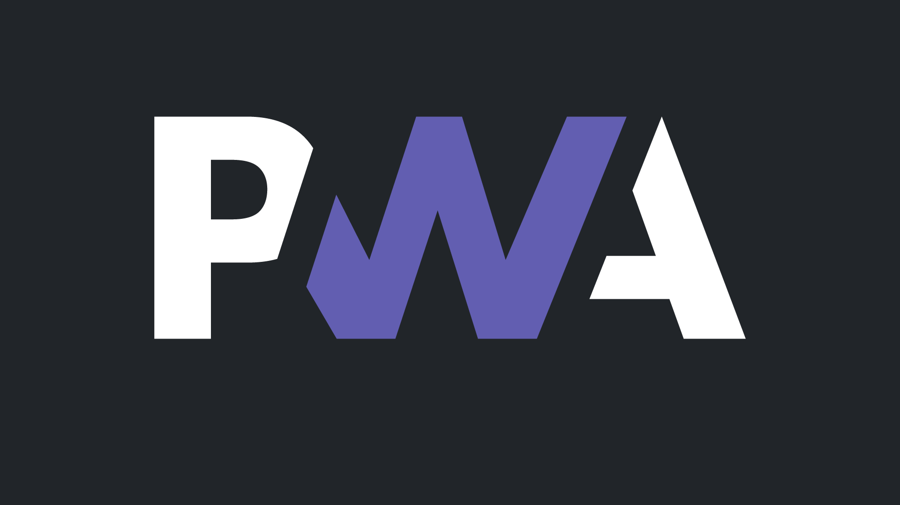

PWA
Autor: Moisés Ramos Jasso

Que es una PWA:
Una PWA (Progressive Web Application, o Aplicación Web Progresiva) es un tipo de aplicación web que combina lo mejor de las aplicaciones nativas (como las que descargas de una tienda de aplicaciones) con lo mejor de las páginas web tradicionales. Estas aplicaciones ofrecen una experiencia similar a la de las aplicaciones móviles, pero son accesibles directamente desde un navegador web.